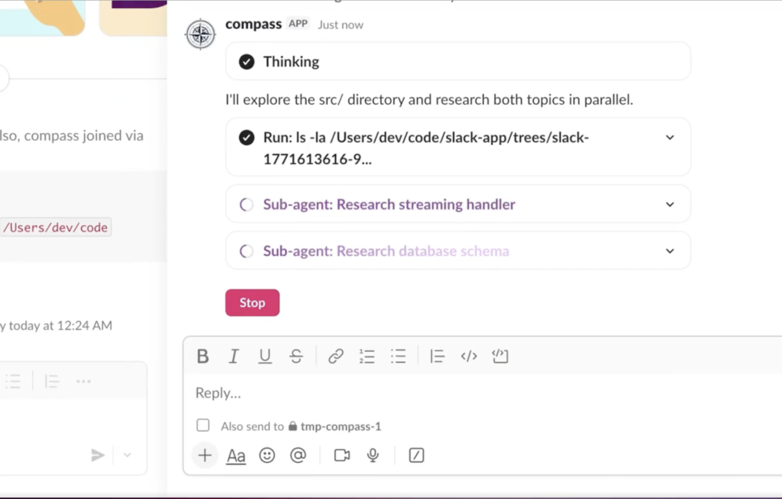

Bring Claude Code
to your Slack workspace
Every thread becomes an isolated coding session — with its own working directory, git worktree, and full local filesystem access. Your whole team, working in parallel, zero conflicts.
$ bunx compass-agent
View on GitHub →
